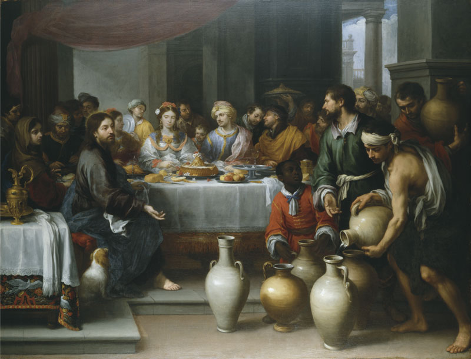
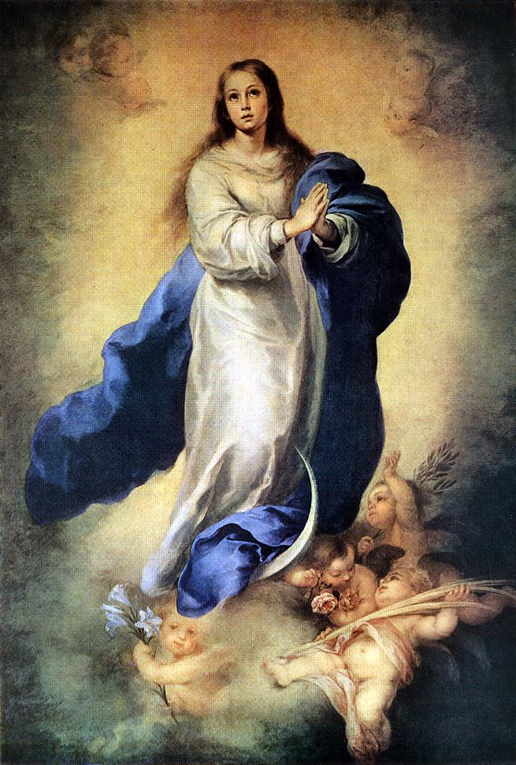

226. ALTHOUGH what is essential in this devotion consists in the interior, we must not fail to unite to the inward practice certain external observances. Hcec oportet facere, et illa non omittere. We must do the one, yet not leave the other undone, both because the outward practices well performed aid the inward ones, and because they make a man remember, by reminding his senses, what he has done or ought to do; and also because they are suitable to edify our neighbour, who sees them, which inward practices cannot do. Let no worldling then or critic sneer at this. Let them not say that because true devotion is in the heart, we must avoid external devotion; or that devotion ought to be hidden, and that there may be vanity in showing it. I answer with my Master, that men should see our good works, that they may glorify our Father, who is in Heaven; not, as St. Gregory says, that we ought to perform our actions and exterior devotions to please men and to get praise—that would be vanity—but that we should sometimes do them before men, with the view of pleasing God, and glorifying Him thereby, without caring either for the contempt or the praise of men.
I will only allude briefly to some exterior practices, which I do not call ‘exterior’ because we do them without any interior, but because they have something outward about them, to distinguish them from those which are purely inward.
227. THOSE who wish to enter into this particular devotion, which is not at present erected into a confraternity, though that were to be wished—after having, as I said in the first part of this preparation for the reign of Jesus Christ, employed twelve days, at least, in emptying themselves of the spirit of the world, which is contrary to the spirit of Jesus Christ—should employ three weeks in filling themselves with Jesus Christ by the holy Virgin. They should pursue the following order:
228. During the first week they should employ all their prayers and pious actions in asking for a knowledge of themselves, and for contrition of their sins; and they should do this in a spirit of humility. For that end they can, if they choose, meditate on what I have said before of our inward corruption. They can look upon themselves during the six days of this week as snails, crawling things, toads, swine, serpents, and unclean animals; or they can reflect on those three considerations of St. Bernard, the vileness of our origin, the dishonours of our present state, and our ending as the food of worms. They should pray our Lord and the Holy Ghost to enlighten them; and for that end they might use the ejaculations, Domine, ut videam, or Noverim me, or Veni Sancte Spiritus; and they may say daily the Ave maris stella, and the litany of the Holy Ghost.
229. During the second week they should apply themselves, during all their prayers and works each day, to know the Blessed Virgin. They should ask this knowledge of the Holy Ghost; they should read and meditate what we have said about it. They should recite, as in the first week, the litany of the Holy Ghost and the Ave maris stella, and in addition a Rosary daily, or, if not a whole Rosary, at least a chaplet, for the intention of impetrating more knowledge of Mary.
230. They should apply themselves in the third week to know Jesus Christ. They can meditate upon what we have said about Him, and say the prayer of St. Augustine, which they will find in the first part of this treatise. They can, with the same Saint, repeat a hundred times a day, Noverim te—“Lord, that I might know Thee!” or Domine, ut videam—“Lord, that I might see who Thou art!” They shall recite, as in the’ preceding weeks, the litany of the Holy Ghost and the Ave maris stella, and they shall add daily the litany of the Holy Name of Jesus.
231. At the end of the three weeks they shall confess and communicate, with the intention of giving themselves to Jesus Christ, in the quality of slaves of love, by the hands of Mary. After communion, which they should try to make according to the method given farther on, they should recite the formula of their consecration, which they will find afterwards. They ought to write it, or have it written, unless it is printed; and they should sign it the same day they have made it.
232. It would be well also that on that day they should pay some tribute to Jesus Christ and our Blessed Lady, either as a penance for their past unfaithfulness to the vows of their Baptism, or in testimony of their dependence and allegiance to the domain of Jesus and Mary. This tribute ought to be according to the devotion and capacity of every one, as a fast, a mortification, an alms, or a candle. If they had but a pin to give in homage, yet gave it with a good heart, it would be enough for Jesus, who looks only at the good-will.
233. Once a year at least, on the same day, they should renew the same consecration, observing the same practices during the three weeks.
They might also once a month, or even once a day, renew what they have done by these few words: Tuus totus ego sum, et omnia mea tua sunt—“I am all for Thee, and all I have belongs to Thee, O my sweet Jesus, by Mary Thy holy Mother.”
234. THEY may recite every day of their life, without however making any burden of it, the Little Corona of the Blessed Virgin, composed of three Our Fathers and twelve Hail Marys, in honour of our Lady’s twelve privileges and grandeurs. This is a very ancient practice, for it has its foundation in the Holy Scriptures. St. John saw a woman crowned with twelve stars, clothed with the sun, and holding the moon under her feet; and this woman, according to the interpreters, was the most holy Virgin.
235. There are many ways of saying this Corona well; but it would be too long to enter upon them. The Holy Ghost will teach them to those who are the most faithful to this devotion. Nevertheless, to say it quite simply we should begin by saying, Dignare me laudare tey Virgo sacrata, da mihi virtutem contra hostes tuos—“Vouchsafe me to praise Thee, O sacred Virgin, give me strength against thine enemies.” After that we should say the Credo, and then a Pater with four Aves, and then one Gloria Patri; then another Pater, four Aves, and one Gloria Patri, and so on with the rest; and at the end we should say the Sub tuum prcesidium—“Under thy protection we seek refuge, Holy Mother of God; despise not our petitions in our needs, but from all dangers deliver us always, Virgin Glorious and Blessed.”
236. IT IS a most glorious and praiseworthy thing, and very useful to those who have thus made themselves slaves of Jesus and Mary, that they should wear, as a badge of their loving slavery, little iron chains, blessed with the proper benediction.[5]
It is perfectly true that these external badges are not essential, and a person who has embraced this devotion may very well go without them; nevertheless, I cannot refrain from warmly praising those who, after having shaken off the shameful chains of the slavery of the devil, in which original sin, and perhaps actual sins, had engaged them, have voluntarily surrendered themselves to the glorious slavery of Jesus Christ, and glory with St. Paul in being in chains for Jesus; chains a thousand times more glorious and precious, though of iron, than all the golden collars of emperors.
237. Once there was nothing more infamous on earth than the Cross, and now that wood is the most glorious boast of Christianity. Let us say the same of the irons of slavery. There was nothing more ignominious among the ancients; nothing more shameful even now among the heathen. But among Christians there is nothing more illustrious than the chains of Jesus; for they unchain us, and preserve us from the infamous fetters of sin and the devil. They set us at liberty, and chain us to Jesus and Mary; not by compulsion and constraint, like galley-slaves, but by charity and love, like children. Traham eos in vinculis charitatis—“I will draw them to Me,” said God by the mouth of the prophet, “by the chains of love.” These chains are as strong as death, and they are in a certain sense strongest in those who are faithful in carrying these glorious badges to their death. For, though death destroys their bodies in bringing them to corruption, it does not destroy the chains of their slavery, which, being of iron, do not corrupt so easily. Perhaps, at the day of the resurrection of the body, the grand last judgment, these chains shall still be round their bones, and shall make a part of their glory, and be transmuted into chains of light and splendour. Happy, then, a thousand times happy, the illustrious slaves of Jesus, who wear their chains even to the tomb!
238. The following are the reasons for wearing these little chains:
First, it is to remind the Christian of the vows and engagements of his Baptism, of the perfect renewal he has made of them by this devotion, and of the strict obligation under which he is to be faithful to them. As the man who shapes his course more often by the senses than by pure faith easily forgets his obligations towards God, unless he has some outward thing to remind him of them, these little chains serve marvellously to remind the Christian of the chains of sin, and of the slavery of the devil, from which Baptism has delivered him, and of the dependence on Jesus which he has vowed to Him in Baptism, and of the ratification of it which he has made by the renewal of his vows. One of the reasons why so few Christians think of their baptismal vows, and live with as much license as if they had promised no more to God than the heathen, is because they do not wear any external badge to make them remember it.
239. Secondly, it is to show that we are not ashamed of the servitude and slavery of Jesus Christ, and that we renounce the slavery of the world, sin, and the devil.
Thirdly, it is to guarantee ourselves from the chains of sin and the devil, and to be beforehand with them; for we must wear either the chains of iniquity, or the chains of charity and salvation: Vincula peccatorum aut vincula charitatis.
240. O my dear brother, let us break the chains of sin and of sinners, of the world and of worldliness, of the devil and his ministers; and let us cast far from us their depressing yoke: Dirumpamus vincula eorum, et projiciamus a nobis jugum ipsorum. Let us put our feet, to use the terms of the Holy Ghost, into His glorious irons, and our neck into His collars: Injice pedem tuum in compedes illius, et in torques illius collum tuum; subjice humerum tuum et porta illam, et ne acedieris vinculis ejus. You will remark that the Holy Ghost, before saying these words, prepares a soul for them, lest it should reject His important counsel. See His words: Audi, fili, et accipe consilium intellectus, et ne abjicias consilia mea—“Hearken, My son, and receive a counsel of understanding, and reject not My counsel.”
241. You would wish, my very dear friend, that I should here unite myself to the Holy Ghost to give you the same counsel with Him. Vincula illius alligatura salutis—His chains are chains of salvation. As Jesus Christ on the cross ought to draw all things to Him, with their will or against it, He will draw the reprobate by the chains of their sins, that He may chain them like galley-slaves and devils to His eternal anger and revengeful justice. But He will, and particularly in these latter times, draw the predestinate by the chains of charity. Omnia traham ad meipsum. Traham eos in vinculis charitatis.
242. These loving slaves of Jesus Christ, “the chained of Christ,”—Vincti Christi—can wear their chains either on their neck or on their feet. Father Vincent Caraffa, seventh general of the Jesuits, who died in the odour of sanctity, in the year 1643, used to wear a circle of iron round his feet as a mark of his servitude; and said that his only pain was that he could not publicly drag a chain. The Mother Agnes of Jesus, of whom we have spoken before, used to wear an iron chain round her body. Others have worn it round their neck, in penance for the collars of pearls which they have worn in the world; while others have worn it round their arms, to remind themselves, in their manual labours, that they were slaves of Jesus Christ.
243. THOSE who undertake this holy slavery should have a very special devotion to the great mystery of the Incarnation of the Word on the 25th of March. Indeed, the Incarnation is the proper mystery of this practice, inasmuch as it was a devotion inspired by the Holy Ghost, first, to honour and imitate the ineffable dependence which God the Son has been pleased to have on Mary, for His Father’s glory and our salvation; which dependence particularly appears in this mystery, where Jesus is a captive and a slave in the bosom of the divine Mary, and depends upon her for all things; secondly, to thank God for the incomparable graces He has given Mary, and particularly for having chosen her to be His most holy Mother, which choice was made in this mystery. These are the two principal ends of the slavery of Jesus in Mary.
244. Have the goodness to observe that I generally say ‘the slave of Jesus in Mary,’ ‘the slavery of Mary in Jesus.’ I might, in good truth, as many have done before, say ‘the slave of Mary,’ ‘the slavery of the holy Virgin’; but I think it is better to say ‘the slave of Jesus in Mary,’ as Mr. Tronson, superior general of the seminary in St. Sulpice, renowned for his rare prudence and consummate piety, counselled to an ecclesiastic who consulted him on the subject The following were the reasons:
245. § 1. As we are living in an age of intellectual pride, and there are all round us numbers of puffed-up scholars and conceited and critical spirits, who have plenty to say against the best established and most solid practices of piety, it is better for us not to give them any needless occasion of criticism. Hence it is better for us to say ‘the slavery of Jesus in Mary,’ and to call ourselves the slaves of Jesus Christ rather than the slaves of Mary, taking the denomination of our devotion rather from its last end, which is Jesus Christ, than from the road and the means to the end, which Mary is; though I repeat that in truth we may do either, as I have done myself. For example: a man who goes from Orleans to Tours by way of Amboise may very well say that he is going to Amboise, or that he is going to Tours; that he is a traveller to Amboise, and a traveller to Tours; with this difference however, that Amboise is but his straight road to Tours, and that Tours only is the last end and term of his voyage.
246. § 2. A second reason is because the principal mystery we celebrate in honour of this devotion is the mystery of the Incarnation, where we can only see Jesus in Mary, and incarnate in her bosom. Hence it is more to the purpose to speak of the slavery of Jesus in Mary, and of Jesus residing and reigning in Mary, according to that beautiful prayer of so many great men, “O Jesus, living in Mary, come and live in us, in Thy spirit of sanctity,.”
247. § 3. Another reason is because this manner of speaking sets forth still more the intimate union which there is between Jesus and Mary. They are so intimately united, that the one is altogether in the other. Jesus is altogether in Mary, and Mary is altogether in Jesus; or rather, she exists no more, but Jesus is all alone in her, and it were easier to separate the light from the sun than Mary from Jesus. So that we might call our Lord Jesus of Mary, and our Blessed Lady Mary of Jesus.
248. The time would not permit me to stop now to explain the excellences and grandeurs of the mysteries of Jesus living and reigning in Mary, in other words, of the Incarnation of the Word. I will content myself with saying these three words: We have here the first mystery of Jesus Christ—the most hidden, the most exalted, and the least known. It is in this mystery that Jesus, in His Mother’s womb, which is for that very reason called by the Saints the cabinet of the secrets of God, has, in concert with Mary, chosen all the elect It is in this mystery that He has wrought all the other mysteries of His life by the acceptance which He made of them, Jesus ingrediens mundum dicit, Ecce venio, ut faciam voluntatem tuam. Consequently this mystery is an abridgment of all mysteries, and contains the will and grace of all. Finally, this mystery is the throne of the mercy, of the liberality, and of the glory of God. It is the throne of His mercy for us, because, as we cannot approach Jesus but by Mary, we can only see Jesus and speak to Him by her intercession, Jesus, who always hears His dear Mother, always grants His grace and mercy to poor sinners. Adeamus ergo cum fiducia ad thronum gratice. It is the throne of His liberality for Mary, because, while the new Adam dwelt in that true terrestrial Paradise, He worked so many miracles in secret, that neither Angels nor men can comprehend them. It is on this account that the Saints call Mary the magnificence of God—Magnificentia Dei—as if God were only magnificent in Mary: solummodo ibi magnificus Dominus. It is the throne of His glory for His Father, because it is in Mary that Jesus Christ has calmed His Father, irritated against men, and that He has made restitution of the glory which sin ravished from Him, and that, by the sacrifice He made of His own will and of Himself, He has given Him more glory than ever the sacrifices of the Ancient Law could do, and He gives Him now an infinite glory, which He never could have received from man.
249. THOSE who adopt this slavery ought also to have a great devotion to saying the Hail Mary (the Angelical Salutation). Few Christians, however enlightened, know the real price, merit, excellence, and necessity of the Hail Mary. It was necessary for the Blessed Virgin to appear several times to great and enlightened Saints, to show them the merit of it. She did so to St. Dominic, St. John Capistran, and the Blessed Alan de la Roche. They have composed entire works on the wonders and efficacy of that prayer for converting souls. They have loudly published and openly preached that, salvation having begun with the Hail Mary, the salvation of each one of us in particular is attached to that prayer. They tell us that it is that prayer which made the dry and barren earth bring forth the fruit of life; and that it is that prayer well said which makes the Word of God germinate in our souls, and bring forth Jesus Christ, the Fruit of life. They tell us that the Hail Mary is a heavenly dew for watering the earth, which is the soul, to make it bring forth its fruit in season; and that a soul which is not watered by that prayer bears no fruit, and brings forth only thorns and brambles, and is ready to be cursed.
250. Listen to what our Lady revealed to the Blessed Alan de la Roche, as he has recorded it in his book on the dignity of the Rosary: “Know, my son, and make all others know, that it is a probable and proximate sign of eternal damnation to have an aversion, a lukewarmness, or a negligence, in saying the Angelical Salutation, which has repaired the whole world.” Scias enim et secure intelligas et inde late omnibus notum facias, quod videlicet signum probabile est et propinqunm ceternce damnationis horrere et acediari, ac negligere Salutationem Angelicam, totius mundi reparationem. These are words at once terrible and consoling, and which we should find it hard to believe, if we had not that holy man for a guarantee, and St. Dominic before him, and many great men since. But we have also the experience of several ages; for it has always been remarked that those who wear the outward look of reprobation, like impious heretics and proud worldlings, hate or despise the Hail Mary or the Rosary. Heretics still learn and say the Our Father, but not the Hail Mary, nor the Rosary. That is their horror. They would rather wear a serpent than a rosary. The proud also, although Catholics, have the same inclinations as their father, Lucifer; and so have only contempt or indifference for the Hail Mary, and look at the Rosary as at a devotion which is only good for the ignorant and for those who cannot read. On the contrary it is an equally universal experience, that those who have otherwise great marks of predestination about them love and relish the Hail Mary, and delight in saying it. We always see the more a man is for God, the more he likes that prayer. This is what our Lady said also to the Blessed Alan, after the words which I have recently quoted.
251. I do not know how it is, nor why, but nevertheless I well know that it is true; nor have I any better secret of knowing whether a person is for God than to examine if he likes to say the Hail Mary and the Rosary. I say, if he likes; for it may happen that a person may be under some natural inability to say it, or even a supernatural one; yet nevertheless he likes it always, and always inspires the same liking into others.
252. O predestinate souls! slaves of Jesus in Mary! learn that the Hail Mary is the most beautiful of all prayers after the Our Father. It is the most perfect compliment which you can make to Mary, because it is the compliment which the Most High sent her by an archangel, in order to gain her heart; and it was so powerful over her heart by the secret charms of which it is so full, that in spite of her profound humility, she gave her consent to the Incarnation of the Word. It is by this compliment also that you will infallibly gain her heart, if you say it as you ought.
253. The Hail Mary well said, that is, with attention, devotion, and modesty, is, according to the Saints, the enemy of the devil, which puts him to flight, and the hammer which crushes him. It is the sanctification of the soul, the joy of Angels, the melody of the predestinate, the canticle of the New Testament, the pleasure of Mary, and the glory of the Most Holy Trinity. The Hail Mary is a heavenly dew which fertilises the soul. It is the chaste and loving kiss which we give to Mary. It is a vermilion rose which we present to her; a precious pearl we offer her; a chalice of divine ambrosial nectar which we hold to her. All these are comparisons of the Saints.
254. I pray you urgently, by the love I bear you in Jesus and Mary, not to content yourselves with saying the Little Corona of the Blessed Virgin, but a whole Chaplet; or even, if you have time, the whole Rosary every day. At the moment of your death, you will bless the day and hour in which you have followed my advice. Having thus sown in the benedictions of Jesus and Mary, you will reap eternal benedictions in heaven: qui seminat in benedictionibus, de benedictionibus et metet.
255. TO THANK God for the graces He has given to our Lady, those who adopt this devotion will often say the Magnificat, as the Blessed Mary d’Oignies did, and many other Saints. It is the only prayer, the only work, which the holy Virgin composed, or rather which Jesus composed in her; for He spoke by her mouth. It is the greatest sacrifice of praise which God ever received from a pure creature in the law of grace. It is, on the one hand, the most humble and grateful, and on the other hand, the most sublime and exalted, of all canticles. There are in that song mysteries so great and hidden, that the Angels do not know them. The pious and erudite Gerson employed a great part of his life in composing works upon most difficult subjects; and yet it was only at the close of his career, and even then with trembling, that he undertook to comment on the Magnificat, so as to crown all his other works. He wrote a folio volume on it, and brings forward many admirable things about that beautiful and divine canticle. Among other things, he says that our Lady often repeated it herself, and especially for thanksgiving after Communion. The learned Benzonius, in explaining the same Magnificat, relates many miracles wrought by the virtue of it, and says that the devils tremble and fly when they hear these words: Fecit potentiam in brachio suo, dispersit superbos mente cordis sui—“He has shown strength with his arm, and has scattered the proud in the conceit of his own heart”
256. THOSE faithful servants of Mary, who adopt this devotion, ought always greatly to despise, to hate, and to eschew the corrupted world, and to make use of those practices of the contempt of the world which we have given in the first part of this treatise.

257. BESIDES the external practices of the devotion which we have been describing so far, and which we must not omit through negligence or contempt, so far as the state and condition of each one will allow him to observe them, there are some very sanctifying interior practices for those whom the Holy Ghost calls to high perfection.
These may be expressed in four words: to do all our actions by Mary, with Mary, in Mary, and for Mary; so that we may do them all the more perfectly by Jesus, with Jesus, in Jesus, and for Jesus.
258. I. We must do our actions by Mary; that is to say, we must obey her in all things, and in all things conduct ourselves by her spirit, which is the Holy Spirit of God. Those who are led by the Spirit of God are the children of God—Qui spiritu Dei aguntur, ii sunt filii Dei. Those who are led by the spirit of Mary are the children of Mary, and consequently the children of God, as we have shown; and among so many clients of the Blessed Virgin, none are true or faithful but those who are led by her spirit. I have said that the spirit of Mary was the Spirit of God, because she was never led by her own spirit, but always by the Holy Ghost, who has rendered Himself so completely master of her, that He has become her own proper spirit.
It is on this account that St. Ambrose says: Sit in singulis Marice anima, ut magnificet Dominum; sit in singulis spiritus Marice, ut exultet in Deo—“Let the soul of Mary be in each of us to magnify the Lord, and the spirit of Mary be in each of us to rejoice in God.” A soul is happy indeed, when, like the good Jesuit lay brother, Alphonso Rodriguez, who died in the odour of sanctity, it is all possessed and over-ruled by the spirit of Mary, a spirit meek and strong, zealous and prudent, humble and courageous, pure and profound.
259. In order that the soul may let itself be led by Mary’s spirit, it must first of all renounce its own spirit, and its own proper lights and wills, before it does anything. For example: it should do so before its prayer, before its saying or hearing Mass, and before communicating; because the darkness of our own spirit, and the malice of our own will and operation, if we follow them, however good they may appear to us, will put an obstacle to the spirit of Mary. Secondly, we must deliver ourselves to the spirit of Mary to be moved and influenced by it in the manner she chooses. We must put ourselves and leave ourselves in her virginal hands, like a tool in the grasp of a workman, like a lute in the hands of a skilful player. We must lose ourselves, and abandon ourselves to her, like a stone one throws into the sea. This must be done simply and in an instant, by one glance of the mind, by one little movement of the will, or even verbally, in saying, for example, I renounce myself; I give myself to thee, my dear Mother. We may not, perhaps, feel any sensible sweetness in this act of union, but it is not on that account the less real. It is just as if we were to say with equal sincerity, though without any sensible change in ourselves, what, may it please God, we never shall say, I give myself to the devil; we should not the less truly belong to the devil because we did not feel we belonged to him. Thirdly, we must, from time to time, both during and after the action, renew the same act and offering of union. The more we shall do so, the more we shall be sanctified; and we shall all the sooner attain to union with Jesus Christ, which always follows necessarily on our union with Mary, because the spirit of Mary is the spirit of Jesus.
260. II. We must do our actions with Mary; that is to say, we must in all our actions regard Mary as an accomplished model of every virtue and perfection which the Holy Ghost has formed in a pure creature, for us to imitate according to our little measure. We must therefore in every action consider how Mary has done it, or how she would have done it, had she been in our place. For that end we must examine and meditate the great virtues which she practised during her life, and particularly, first of all, her lively faith, by which she believed without hesitation the Angel’s word, and believed it faithfully and constantly up to the foot of the Cross; Secondly, her profound humility, which made her hide herself, hold her peace, submit to everything, and put herself the last of all; and Thirdly, her altogether divine purity, which never has had, and never can have, its equal under heaven; and so on with all her other virtues.
Let us remember, I repeat it for the second time, that Mary is the great and exclusive mould of God, proper to make living images of God, at small cost and in a little time; and that a soul which has found that mould, and has lost itself in it, is presently changed into Jesus Christ, whom that mould represents to the life.
261. III. We must do our actions in Mary. Thoroughly to understand this practice, we must know, first, that our Blessed Lady is the true terrestrial paradise of the new Adam, and that the ancient Paradise was but a figure of her. There are, then, in this earthly paradise, riches, beauties, rarities, and inexplicable sweetnesses, which Jesus Christ, the new Adam, has left there; it was in this paradise that He took His complacence for nine months, worked His wonders, and displayed His riches with the magnificence of a God. This most holy place is composed only of a virgin and immaculate earth, of which the new Adam was formed, and on which He was nourished, without any spot or stain, by the operation of the Holy Ghost, who dwelt there. It is in this earthly paradise that there is the true tree of life, which has borne Jesus Christ, the Fruit of life, and the tree of the knowledge of good and evil, which has given light unto the world. There are in this divine place trees planted by the hand of God, and watered by His Divine unction, which have borne and daily bear fruits of a taste divine. There are flower-beds, enamelled with beautiful and various blossoms; virtues, shedding odours which embalm the very Angels. There are meadows green with hope, impregnable towers of strength, and the most enticing houses of confidence. It is but the Holy Ghost who can make us know the hidden truth of these figures of material things. There are in this place an air of perfect purity; a fair sun, without the shadow of the Divinity; a fair day, without the night of the Sacred Humanity; a continual burning furnace of love, where all the iron that is cast into it is changed, by excessive heat, to gold. There is a river of humility, which springs from the earth, and which, dividing itself into four branches, waters all that enchanted place; and these are the four cardinal virtues.
262. The Holy Ghost, by the mouth of the Fathers, also styles the Blessed Virgin the Eastern Gate, by which the High-Priest, Jesus Christ, enters the world and leaves it. By it He came the first time, and by it He will come the second. In the next place, to comprehend thoroughly the practice of doing our actions in Mary, we must know that the most holy Virgin is the Sanctuary of the Divinity, the repose of the Most Holy Trinity, the throne of God, the city of God, the altar of God, the temple of God, the world of God. All these different epithets and panegyrics are most substantially true, with reference to the different marvels which the Most High has wrought in Mary. Oh, what riches! what glory! what pleasure! what happiness! to be able to enter in and dwell in Mary, where the Most High has set up the throne of His supreme glory!
263. But how difficult it is for sinners like ourselves to have the permission, the capacity, and the light, to enter into a place so high and so holy, which is guarded not by one of the Cherubim, like the old earthly Paradise, but by the Holy Ghost Himself, who is its absolute master! He Himself has said of it, Hortus conclusus, soror mea sponsa, hortus conclusus, fons signatus; Mary is shut, Mary is sealed. The miserable children of Adam and Eve, driven from the earthly Paradise, cannot enter into this one, except by a particular grace of the Holy Ghost, which they ought to merit.
264. After we have obtained this illustrious grace by our fidelity, we must remain in the fair interior of Mary with complacency, repose there in peace, lean our weight there in confidence, hide ourselves there with assurance, and lose ourselves there without reserve. Thus, in that virginal bosom;
§ 1. The soul shall be nourished with the milk of grace and maternal mercy;
§ 2. It shall be delivered from its troubles, fears, and scruples; and;
§ 3. It shall be in safety against all its enemies—the world, the devil, and sin—who never have an entrance there. It is on this account that Mary says that they who work in her shall not sin: Qui operantur in me, non peccabunt; that is to say, those who dwell in Mary’s spirit shall fall into no considerable fault, lastly;
§ 4. The soul shall be formed in Jesus Christ, and Jesus Christ in it, because her bosom is, as the holy Fathers say, the chamber of the divine Sacraments, where Jesus Christ and all the elect have been formed.
265. IV. Finally, we must do all our actions for Mary. As we have given ourselves up entirely to her service, it is but just to do everything for her, as a servant and a slave. It is not that we can take her for the last end of our services, for that is Jesus Christ alone; but we may take her for our proximate end, our mysterious means, and our easy way to go to Him. Like a good servant and slave, we must not remain idle, but, supported by her protection, we must undertake and achieve great things for this august sovereign. We must defend her privileges when they are disputed; we must stand up for her glory when it is attacked; we must entice all the world, if we can, to her service and to this true and solid devotion; we must speak and cry out against those who abuse her devotion to outrage her Son, and we must at the same time establish this Veritable Devotion; we must pretend to no recompense for our little services, except the honour of belonging to so sweet a Queen, and the happiness of being united by her to Jesus her Son by an indissoluble tie in time and in eternity.
Glory to Jesus in Mary!
Glory to Mary in Jesus!
Glory to God Alone!
